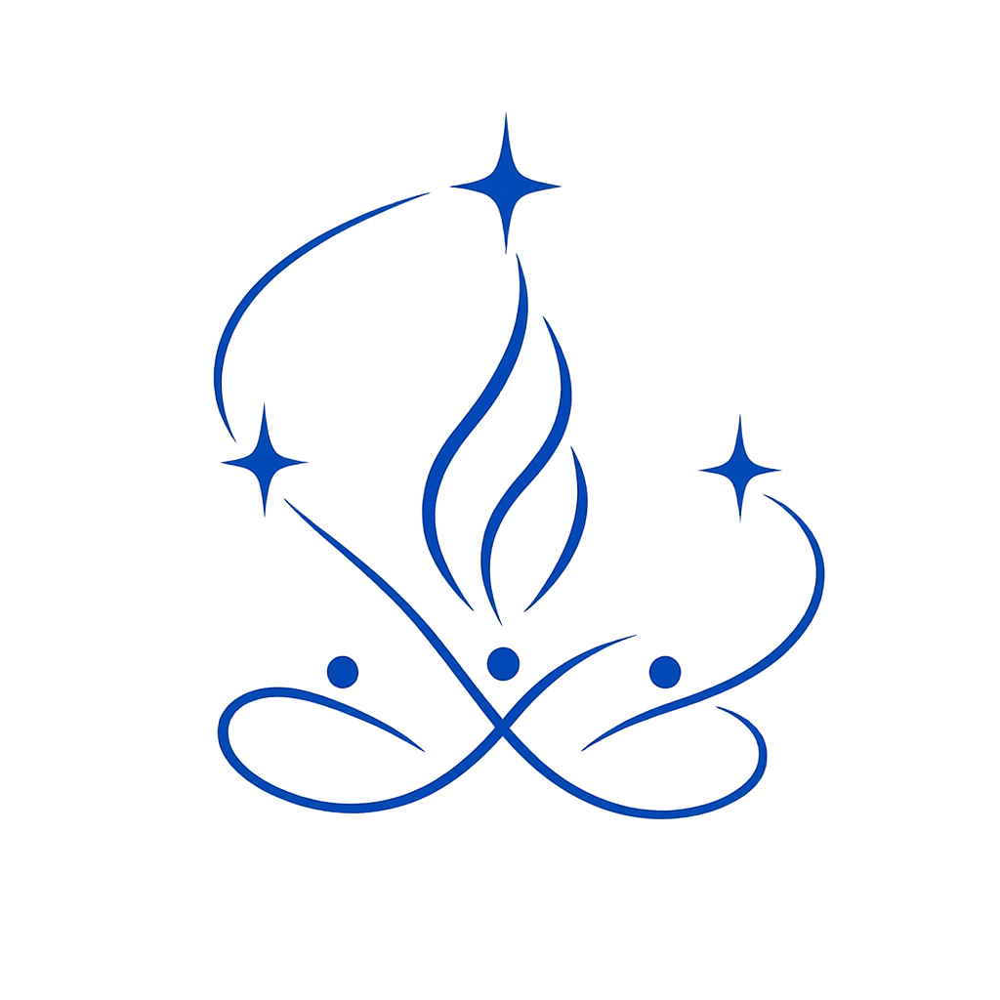

不同职业，不同性格，碰撞出一个人写不出的故事
如果能让不同职业的人同时进入同一个冲突情境，用各自的真实经验产生化学反应。一个人永远写不出的故事，就可能诞生。
系统自动分配身份，进入冲突情境。刘看山用引导式提问，帮你把最真诚的表达挖掘出来。
15 秒匹配一个真人搭档，两个真人 + 刘看山催化。把两个人的沉默，变成三个人碰撞的契机。
一群人，一个场景，N 种身份。无剧本即兴发言，投票决定剧情走向。
选择角色，刘看山控场推进四幕剧情。集体创作揭晓真相。
从玩到写，众筹故事坑，一集一集往下演。潜力故事成为下一个 IP。
让知乎的故事，从一个人变成一群人。 当创作门槛被击穿，不同职业的视角开始碰撞——知乎将迎来创作者与内容的井喷。
从对话到创作，从审核到连载，每一个关键时刻都有专门的 Agent 为你服务
"让每个普通人的想法被看见"